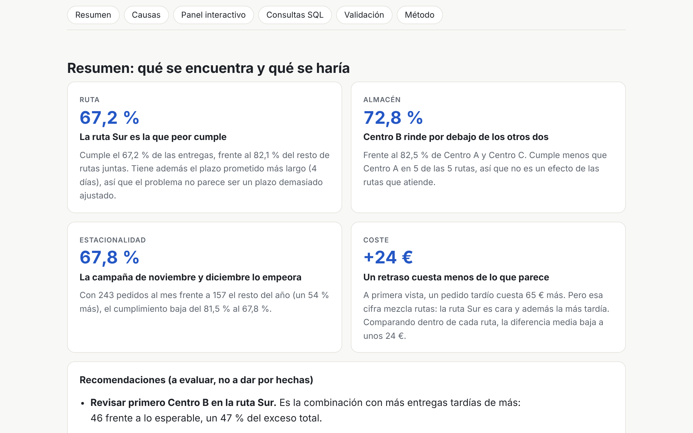
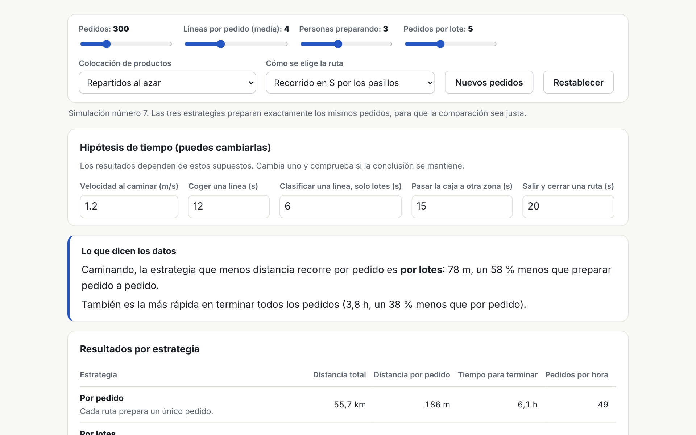
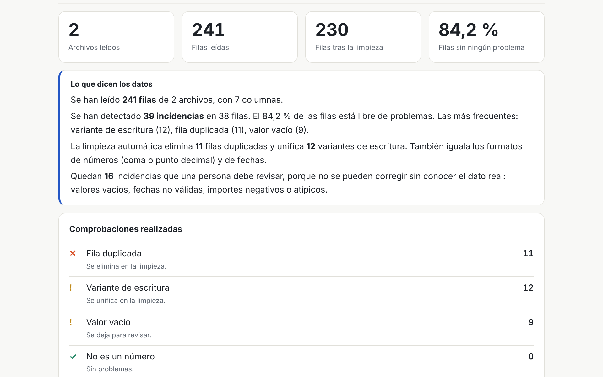

Ángela Santa Cruz López
Ingeniera de telecomunicaciones · Automatización y análisis de datos
Ingeniera con experiencia en automatización de procesos con Python y Excel/VBA. Oriento mi perfil hacia el análisis de datos y la Business Intelligence, con formación en SQL y Power BI, para convertir datos en indicadores y decisiones.
He trabajado automatizando procesos en una empresa de transporte. Busco incorporarme a un equipo de análisis de datos, business intelligence o mejora de procesos, en distintos sectores.
Proyectos
Proyectos personales con datos sintéticos, planteados como casos de negocio. Cada uno explica el problema, el análisis y sus limitaciones.

Operations Intelligence
Una empresa de distribución no sabe en qué rutas y almacenes se concentran los retrasos. El proyecto analiza dónde y por qué fallan las entregas: consultas SQL, análisis de causas, conclusiones y un panel interactivo, con una sección que valida los cálculos.
Con 3.000 pedidos simulados, el 79,2 % llega a tiempo, y la ruta con más retrasos es Sur.
Python (datos, análisis y validación), SQL en SQLite y JavaScript (panel). Power BI, todavía no.
Abrir el análisis →

Simulador de picking
Compara tres formas de preparar pedidos en un almacén (por pedido, por lotes y por zonas) y muestra cuánto se camina y cuánto se tarda según el número de personas y la colocación de los productos.
Desarrolla las ideas de mejora de mi trabajo fin de máster (que estaba en C). Hecho con JavaScript.
Abrir el simulador →

Informes automáticos
Lee archivos CSV de varias zonas con formatos distintos, detecta duplicados, vacíos, fechas imposibles e importes atípicos, limpia lo que se puede corregir y genera un informe descargable.
Hecho con JavaScript, con una batería de pruebas con errores conocidos. Python solo para los datos de ejemplo.
Abrir la herramienta →
Perfil profesional
Soy ingeniera de Telecomunicaciones y tengo un máster en Logística. Durante mi experiencia profesional he desarrollado automatizaciones con Python y Excel/VBA para reducir tareas manuales, estructurar información y mejorar el reporting operativo. Ahora estoy orientando mi perfil hacia el análisis de datos, Business Intelligence y la automatización, combinando mi experiencia práctica con formación en SQL y Power BI. Me interesa entender los problemas de negocio, analizar los datos disponibles y desarrollar soluciones que ayuden a trabajar mejor y tomar decisiones fundamentadas.
Me gusta seguir aprendiendo, y aplico lo que voy aprendiendo en proyectos propios, como los que verás en esta web.
Formación: Grado en Ingeniería de Telecomunicaciones (Universidad de Cantabria) y Máster en Logística (Universidad Europea).
Trabajo fin de máster: «Simulación de estrategias de picking automatizado para mejora de la eficiencia operativa en almacenes» (Universidad Europea, 2025).
Herramientas: Python, Excel y VBA, y C en el trabajo fin de máster. En formación: SQL y Power BI.
Idiomas: español, inglés B2 (APTIS) e italiano A2.
Contacto
Disponible para nuevas oportunidades en análisis de datos, business intelligence y mejora de procesos.